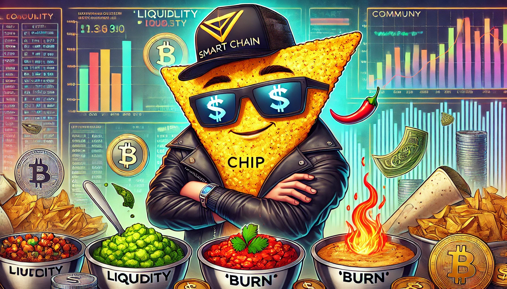
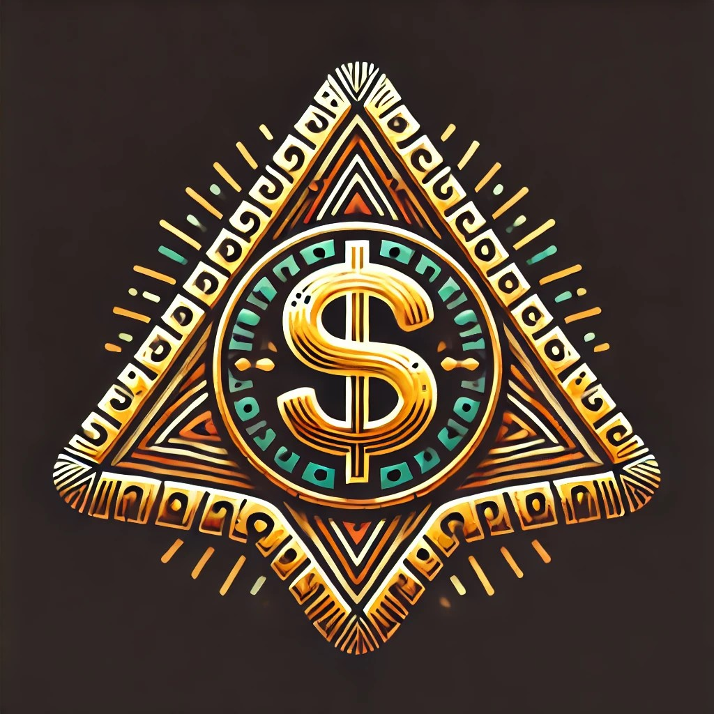
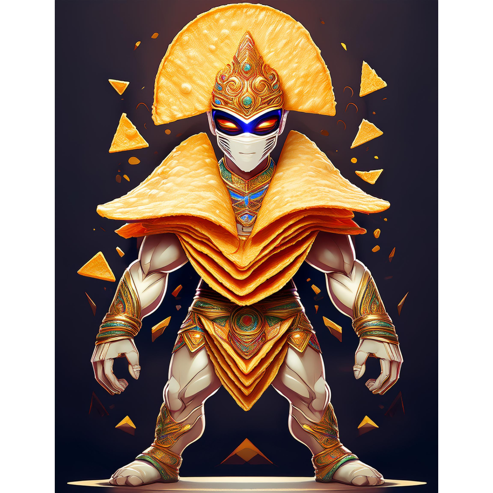

Gallery


{kind=link}
{kind=link}
{kind=link}
{kind=link}
{kind=link}
{kind=link}
{kind=link}
{kind=link}
{kind=link}
{kind=link}
{kind=link}
{kind=link}
Introduction
CHIP is a revolutionary utility token designed to engage users in the cryptocurrency ecosystem while simplifying access to blockchain technology. Our mission is to transform the concept of "eating the dip" into a strategic tool for community growth and sustainability. Operating within the Vector Smart Chain (VSC) ecosystem, CHIP ensures a robust and compliant framework for seamless adoption.
CHIP’s philosophy revolves around engagement, utility, and community empowerment. It prioritizes accessibility, catering to all levels of crypto users through practical applications such as staking, NFTs, and rewards, achieved via carefully designed tokenomics.
The CHIP team fosters a collaborative, growth-oriented mindset, focusing on innovation, resilience under secure and scalable frameworks, and transparency, ensuring every process is open and accessible.
CHIP’s compliance is managed through the Vector Smart Chain and its onboarding partners, including GemPad. These entities handle KYC, AML protocols, liquidity locks, and fundraising to guarantee a trustworthy ecosystem.
Disclaimer: CHIP is not offered or viewed as a security, bond, or financial promise in any jurisdiction. It is solely intended as a utility token for community engagement and fun within the cryptocurrency ecosystem.
Tokenomics
Total Supply and Distribution
The total supply of CHIP tokens is set at 500 million. Here's how the tokens are allocated to ensure a balanced ecosystem and sustainable growth:
- 60% Liquidity Pool (Locked): Ensures deep liquidity and stable trading conditions.
- 20% Treasury (AI-Managed & Locked): Funds CEX listings, staking incentives, and treasury-backed governance proposals.
- 9% Development Fund: Supports infrastructure, security audits, and ecosystem upgrades.
- 4% Community Outreach: Fuels user engagement, gamification incentives, and airdrops.
- 2% Creator’s Wallet (Locked for 3 Months): Ensures long-term project sustainability.
Transaction Tax Mechanics
CHIP implements a 6% transaction tax to foster a sustainable economic model. Each transaction automatically:
- 1% Burn: Reduces total supply, increasing scarcity.
- 1% Redistribution: Rewards existing token holders, encouraging holding and participation.
- 1% Liquidity Pool Contribution: Enhances market depth and stability.
- 1% Development Fund: Supports ongoing ecosystem growth.
- 1% Treasury Fund: Strengthens CHIP’s governance-backed treasury.
- 1% Creator’s Wallet: Provides long-term project sustainability.
Deflationary Mechanisms and Sustainability
CHIP integrates carefully designed deflationary mechanisms that support long-term sustainability and value retention. Central to this strategy is the relationship between CHIP's burn mechanics and community-driven governance, ensuring a balanced approach to supply reduction and ecosystem vitality.
- VSG Sync Burn Mechanism: For every 1,000 VSG burned within the ecosystem, 1 CHIP token is burned, aligning CHIP's deflationary model with the activity and security mechanisms of the Vector Smart Chain (VSC).
- Governance-Led Buybacks: CHIP holders vote on biannual buybacks, funded by the treasury allocation, allowing the community to decide between burning tokens or reinvesting in ecosystem growth.
CHIP’s community governance further distinguishes the token, with holders voting on key financial decisions regarding treasury-backed buybacks. These measures ensure that CHIP remains adaptable, relevant, and valuable for both current users and future adopters.
NFT Rewards
The NFT Tier System is designed to deepen user engagement and reward loyalty within the CHIP ecosystem. This structured system provides tiered benefits based on the level of involvement and investment in the platform. Tiers range from Base, offering basic access, to Founders, which offers substantial influence and exclusive perks.
Base Tier (550 NFTs)
- Access: Basic community channels and updates on platform developments.
- Rewards: Eligibility for occasional community gifts. Does not participate in staking or tax rewards.
Mid Tier (450 NFTs)
- All Base Tier benefits.
- Rewards: Receives 10% of the 1% NFT transaction tax allocated for NFT holders.
- Staking Rewards: Fixed annual return of 4% on staked $CHIP.
High Tier (350 NFTs)
- All Mid Tier benefits.
- Rewards: Receives 20% of the 1% NFT transaction tax.
- Staking Rewards: Fixed annual return of 6% on staked $CHIP.
- Exclusive: Invitations to exclusive events and previews.
Top Tier (250 NFTs)
- All High Tier benefits.
- Rewards: Receives 30% of the 1% NFT transaction tax.
- Staking Rewards: Fixed annual return of 8% on staked $CHIP.
- Enhanced Voting: Access to beta features and increased voting rights.
Founders Tier (50 NFTs)
- All benefits of preceding tiers.
- Rewards: Receives 40% of the 1% NFT transaction tax.
- Staking Rewards: Fixed annual return of 10% on staked $CHIP.
- Exclusive: Private discussions with project founders, recognition as a Founding Member, and a physical print of the NFT.
Community Engagement
CHIP emphasizes community involvement through initiatives like monthly airdrops, participation incentives, and structured engagement strategies. These initiatives are designed to promote active participation, reward loyalty, and strengthen the overall CHIP ecosystem.
Monthly Airdrop Mechanics
- Frequency: Monthly.
- Eligibility: Based on NFT Tier Status and community event participation.
- Reward Scaling: Higher-tier NFT holders and active participants receive more substantial rewards.
- Top Performers: The top 15 raiders receive additional rewards based on their engagement and contributions.
Raid Requirements for Airdrops
To qualify for monthly airdrops, members must participate in organized raids. These are community-driven marketing events aimed at promoting CHIP's visibility and adoption. Contributions are tracked via smart contracts to ensure transparency and fairness.
Scaling Rewards
CHIP incentivizes long-term engagement through a scaling rewards system. Increased participation results in incremental benefits, encouraging sustained involvement and rewarding dedicated community members.
Buyback & Burn Mechanism
CHIP integrates a deflationary buyback and burn mechanism directly synchronized with the Vector Smart Chain (VSC). This mechanism reduces the circulating supply, ensuring token scarcity and long-term value retention.
- VSG Sync Burn Mechanism: For every 1,000 VSG burned within the ecosystem, 1 CHIP token is burned.
- Governance-Led Buybacks: CHIP holders vote on biannual buybacks, determining whether funds are allocated to burns or reinvestment to enhance liquidity and market stability.
These measures are designed to balance deflationary pressures with ecosystem vitality, fostering confidence and stability within the CHIP economy. This approach empowers the community to play a direct role in shaping CHIP's future.
Roadmap
CHIP’s roadmap outlines its vision for development, adoption, and integration within the Vector Smart Chain (VSC) ecosystem and beyond. Spanning from 2025 to 2030, the roadmap prioritizes innovation, community involvement, and scalability.
2025
- Q1-Q2: Presale of CHIP tokens and minting of 50 Founders NFTs via WorldNFT and GemPad.
- Q2: Public launch of CHIP tokens and NFTs on the VSC ecosystem.
- Q3-Q4: Introduction of community-driven governance features and the first annual governance vote.
- Establishment of liquidity pools and staking programs to reward community participation and ensure market stability.
2026
- Utility expansion of CHIP within the VSC ecosystem, including payment solutions and exclusive service access.
- Development and testing of the first cross-chain bridge to connect CHIP with a secondary blockchain, enhancing interoperability.
2027
- Launch of CHIP on an additional blockchain to support broader use cases and accessibility.
- Introduction of tiered voting systems for advanced governance, reflecting NFT tier investments.
2028
- Transition to a fully operational Decentralized Autonomous Organization (DAO), allowing community-driven project management.
- Formation of global partnerships with major fintech and blockchain entities to diversify use cases and drive adoption.
2029
- Implementation of eco-friendly blockchain operations through token mechanisms supporting environmental causes.
- Introduction of innovative token utilities, including derivative products, insurance protocols, and prediction markets.
2030
- Comprehensive review and upgrade of the CHIP ecosystem based on community feedback and emerging technology.
- Expansion to multiple blockchains, establishing CHIP as a versatile and widely accepted digital currency.
Technology
CHIP operates within the Vector Smart Chain (VSC), leveraging cutting-edge blockchain technology to ensure speed, scalability, and sustainability. The VSC provides a robust foundation for CHIP, enabling seamless integration with decentralized applications and broader blockchain ecosystems.
- Consensus Mechanism: VSC uses a Proof of Stake (PoS) consensus mechanism, significantly improving energy efficiency and transaction speed compared to traditional Proof of Work systems.
- EVM and Cosmos Compatibility: Full compatibility with Ethereum Virtual Machine (EVM) and Cosmos ensures seamless interoperability and access to decentralized applications (dApps) across chains.
- Fixed Gas Fees: VSC employs fixed gas fees, offering predictability and stability for transactions. This makes CHIP an ideal choice for both business applications and everyday use cases.
This technical foundation ensures that CHIP remains accessible and efficient for developers and users alike, supporting long-term adoption and growth within the ecosystem.
Security
CHIP’s security framework is designed to protect users, ensure trust, and safeguard the integrity of the ecosystem. Through rigorous audits, liquidity locks, and partnerships, CHIP prioritizes safety and transparency at every level.
- Smart Contract Audits: All CHIP smart contracts undergo rigorous third-party audits facilitated by GemPad and WorldNFTMarket. These audits identify vulnerabilities and ensure the highest level of code security.
- Liquidity Locks: Liquidity pools are locked to prevent rug pulls, enhancing trust and providing stability within the ecosystem.
- NFT Security: Specialized measures ensure secure transactions for NFT creators and collectors, safeguarding the ownership and transfer of digital assets.
- Compliance: CHIP adheres to KYC and AML protocols managed by Vector Smart Chain onboarding partners. This ensures compliance with global regulatory standards and enhances credibility.
Future initiatives include expanding partnerships and adopting advanced blockchain security technologies to adapt to evolving threats. CHIP’s commitment to security ensures a resilient and reliable platform for all stakeholders.
White Paper
The CHIP white paper provides an in-depth overview of the token’s mission, technical framework, ecosystem, and vision for the future. It outlines CHIP’s focus on accessibility, community engagement, and deflationary mechanisms to drive long-term value and adoption.
- Mission: To empower users within the Vector Smart Chain (VSC) ecosystem by providing a fun, compliant, and strategic utility token.
- Total Supply: 500,000,000 $CHIP, distributed across liquidity pools, treasury funds, development, community outreach, and creator’s wallet.
- Transaction Tax: A 6% tax mechanism to support burns, redistribution, liquidity, development, treasury, and creator’s wallet.
- Legal Disclaimer: CHIP is a utility token and is not intended to be offered or viewed as a security, bond, or financial promise in any jurisdiction.
Join the Chip Community
Stay connected with CHIP and become a part of the community driving the project forward. Join our channels to get the latest updates, participate in discussions, and engage with other members of the ecosystem.
Whether you’re a seasoned crypto enthusiast or new to blockchain technology, the CHIP community is here to help you navigate and make the most of this exciting ecosystem. Let’s shape the future of CHIP together!